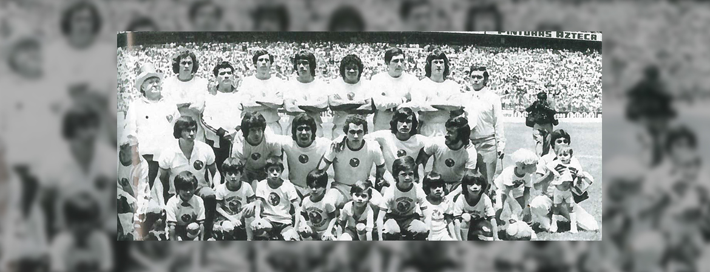

nuestro equipo llegó la última jornada con 37 puntos.
Durante la temporada 1965-1966 América tuvo un gran inicio, sin embargo la campaña se tornó sumamente pareja y competitiva. En aquella época se coronaba el primer lugar de la tabla y
El 19 de diciembre de 1966 se disputó la última fecha del certamen, América recibía en la cancha del Estadio Olímpico Universitario al conjunto de Veracruz. Sabiendo que se necesitaba la victoria para conseguir el título de liga después de no hacerlo desde la temporada 1927-1928, los dirigidos por el uruguayo Roberto Scarone salieron a jugar un futbol practico y efectivo.
¡Un 1 de agosto los azulcremas alzaron el trofeo!
Este campeonato significó el segundo en el futbol mexicano para América de la era profesional y el sexto de los dieciséis que acumula nuestro equipo en la historia, el primer campeonato de liga de la era profesional fue en la temporada 1965-1966. América fue el campeón que inauguró el sistema de liguillas en el futbol mexicano.
Al inicio de la temporada el entrenador era el argentino Luis Grill, pero para la jornada 8, José Antonio Roca fue quien llegó en esa temporada para sustituir al técnico extranjero. Roca realizó varios cambios de posiciones y de jugadores, utilizó a los extremos Roberto “Monito” Rodríguez por la derecha y a Juan Manuel Borbolla por la izquierda, a Salgado lo colocó como delantero y utilizó correctamente a sus medios ofensivos.
¡Las Águilas derrotaron a los Leones Negros de la U de G!
La campaña que se logró en el año de 1976 fue gloriosa, Raúl Cardenas había tomado a la escuadra azulcrema y le había dado un verdadero juego de conjunto. Con un grupo compacto en el cual aparecieron elementos como el brasileño Alcindo, el paraguayo Hugo Enrique Kiese, los mexicanos “Popeye” Trujillo, “Pichojos” Pérez, Sanchez Galindo y el chileno Carlos Reinoso “El Gran Chaparral” como el orquestador, además del debut del joven Alfredo Tena, todos juntos lograron el tan anhelado titulo.
América concluyó el torneo con 53 puntos, cuatro más que los Pumas de la UNAM el más cercano perseguidor. América llegó a la gran final invicto contra el cuadro sorpresa, Los Leones Negros de la Universidad de Guadalajara.
El partido de ida fue en el Jalisco, allá los azulcremas fueron superiores de inicio a fin y el marcador lo reflejó con un 0-3 a favor nuestro, los goles fueron obra de Alcindo, Kiese y Reinoso, este último fue uno de los mejores goles en a historia del futbol mexicano.

La revancha llegó un año después en la temporada 1983-84. En el partido de Ida se empató a dos goles en el Estadio Jalisco, el cotejo se realizo bajo una lluvia torrencial. Las Águilas se fueron arriba con tantos de Carlos Hermosillo y Mario Alberto Trejo, las Chivas reaccionaron gracias a Eduardo y Néstor de la Torre y empataron el clásico. Para la Vuelta, el césped del majestuoso Estadio Azteca vivió uno de los mejores episodios deportivos, la afición americanista estaba lista para apoyar de principio a fin a nuestras Águilas.
La final del siglo: Águilas del América vs Chivas de Guadalajara 1984.
El Estadio Azteca vibró de principio a fin, era el octavo campeonato de Liga para nuestro Club América. En el clásico más emocionante, las Águilas sacaron la casta y con solo 10 hombres durante más de 65 minutos del partido, los azulcremas demostraron que el América es el equipo más importante de México. La alineación del Club América que escribió la historia con letras de oro fue la siguiente:
El América de los ochentas conseguía el Bicampeonato.
La rivalidad deportiva América vs Pumas ha crecido a través de los años. Estos equipos se han enfrentado tres ocasiones en una Final.
La primer final en la cual se enfrentaron estos dos equipos de Águilas y Felinos fue en la temporada de 1984-1985. Una final muy especial ya que se jugaron tres partidos para sacar al campeón.
El primer juego
El partido de ida realizó en el Estadio Azteca un 23 de Mayo de 1985, el cotejo terminó empatado a un tanto, con goles de Alberto García Aspe para los Pumas y Carlos Hermosillo para las Águilas del América.
Partido de vuelta en Ciudad Universitaria
Con el empate a un gol en el juego de ida, se esperaba un cotejo en el cual los felinos sacaran más provecho de su localía, pero el Club América y en especial Hector Miguel Zelada salieron inspirados en la parte defensiva, manteniendo el cero en el arco Americanista. Lo que llevo a disputar un tercer partido para el desempate en una cancha neutral.
¡Un regreso inolvidable!
La historia de América esta hecha de grandes momentos, de grandes hazañas, nuestro equipo ha sorteado muchos obstáculos para alzarse campeón en diferentes torneos, es momento de recordar una de esas historias. Un 6 de octubre de 1985 las Águilas del América salieron airosas y se alzaron con el campeonato.
Un inolvidable regreso para alzar la Liga PRODE 1985.
Carlos Reinoso, el maestro Americanista se encontraba ahora como entrenador del equipo contrario, el Tampico Madero. En el juego de ida, el equipo de ‘La Jaiba Brava’ goleó cuatro goles a uno a las Águilas del América.
América campeón en la Final de la temporada 87-88 contra Pumas en el Azteca
El escenario era inmejorable, El estadio Azteca lucía esplendoroso para recibir el encuentro de vuelta de la final 87-88. Al verse abajo en el marcador global, las Águilas salieron al terreno de juego con la idea de anotar lo más pronto posible para volver a la pelea por el título.
Desde el silbatazo inicial nuestro equipo dirigido por Jorge Vieira se volcó al ataque y a los 24 minutos Gonzálo Farfán sacó un tremendo escopetazo de pierna izquierda desde las afueras del área para marcar el 1-0 (1-1 global).
Este tanto fue una auténtica bocanada de aire fresco para los de Coapa pero solamente 10 minutos después Luis Flores anotaría una vez más tras un tiro de esquina para poner el empate en el marcador 1-1 (2-1 global) y meter de nueva cuenta en problemas a nuestro equipo.
Pero la historia aún no llegaba a su fin, todavía restaban 90 minutos más para definir al campeón del balompié mexicano, mismo que se decidiría en la cancha del Estadio Azteca. El duelo de vuelta se llevó a cabo el 16 de julio de 1989, fue un partido parejo, ambos equipos lucharon a muerte cada balón, buscando quedarse con el trofeo de campeones.
El segundo choque de la gran final terminó con un empate a dos goles, los anotadores por parte de las Águilas fueron Juan Hernández empezando el encuentro en una gran combinación con Alex Dominguez. Patricio Hernández con un testarazo acercó a Cruz Azul. Todavía en la primera parte Ricardo Mojica el central de los azules empató el global con una media vuelta dentro del área.
Pero el momento cumbre todavía faltaba por llegar, en la segunda parte Carlos Hermosillo en una descolgada que todos los aficionados azulcremas aun recuerdan, a pase de Carlos Santos remató con un disparo cruzado fusilando a Larios, Hermosillo festejó con los brazos abiertos emulando el vuelo del Águila.
América campeón
Este empate le dio el título de campeones al cuadro americanista que por el marcador global de 5-4 pudo acreditarse como el campeón mexicano de aquel entonces, alzando así su segunda corona de manera consecutiva y la quinta en diez años
Luego de una incansable lucha, las Águilas del América bajo el mando del técnico de Manuel Lapuente lograron instalarse en la gran final del balompié mexicano fue precisamente un 26 de mayo del año 2002, cuando América supo remontar un marcador de dos goles a cero para derrotar a Necaxa en tiempo extra y alzarse con la corona de campeones del futbol nacional.
El primer encuentro de la serie entre Rayos y Águilas se jugó un 23 de mayo, América venía de vencer en las semifinales a Pumas, por lo que llegaba con la motivación a tope, gran confianza y mostrando un buen futbol. El juego de ida fue de alto nivel, ambos equipos salieron desde los primeros minutos a buscar la ventaja y llegar embalados al juego de vuelta. Necaxa derrotó en el partido de ida dos goles a cero al cuadro americanista.
Las Águilas encararon el encuentro de vuelta con distintas adversidades, una de ellas el marcador global, el cual le daba una ventaja de dos goles a cero a los necaxistas. América dirigido por Manuel Lapuente, fue inteligente, perseverante y audaz en el terreno de juego, lo que le valió para realizar una épica remontada y así consagrarse campeones.
América entró a la liguilla como tercer lugar general con 30 puntos, posicionándose solo por debajo de Monarcas y Cruz Azul. Tras eliminar a Santos y al mismo equipo cementero en cuartos de final y semifinal respectivamente, las Águilas enfrentaron a Tecos en la gran final.
El encuentro de ida se disputó el 26 de mayo del 2005 en la cancha del Estadio Tres de Marzo. Diego Colotto abrió el marcador para los locales al minuto 59. Al verse en desventaja nuestro equipo se tiró con todo al frente y al 87 Cuauhtémoc Blanco igualó los cartones tras el cobro de una pena máxima.
Para el encuentro de vuelta, jugado el 29 de mayo, el Estadio Azteca lucía esplendoroso 105 mil personas se dieron cita en el Coloso de Santa Úrsula para presenciar lo que a la postre sería la consumación del décimo cuarto campeonato en la historia de nuestra institución.
Los de Coapa estaban decididos a no fallar ante su afición por lo que desde el inicio impusieron condiciones al rival. Apenas al primer minuto de juego Aarón Padilla abrió el marcador, tan solo dos minutos más tarde Claudio López perforó la meta tapatía por segunda ocasión. El equipo de Tecos recortó distancias por conducto de Eduardo Lillingston al 21 pero faltando poco para finalizar la primera parte Padilla volvió a anotar para la causa azulcrema,
Conoce más del histórico campeonato americanista.
La final del torneo Clausura 2013 una historia épica, fue un encuentro en el que las Águilas dieron una muestra de pasión, orgullo y amor a la camiseta al derrotar a Cruz Azul para hacerse así del campeonato de liga.
En general todo el campeonato del Clausura 2013 fue un certamen lleno de éxitos en el que América además de conseguir el campeonato obtuvo lo siguiente:
Las Águilas consiguieron el título número 12 de liga al derrotar en un inigualable partido al conjunto de Tigres en la vuelta de la gran final del Apertura 2014. Con goles de Arroyo, Aguilar y Peralta, Las Águilas vencieron por global de 3-1 y se convirtieron en el equipo más ganador de México.
El equipo azulcrema era más dentro del terreno de juego. La superioridad numérica generó aún más llegadas Águila y al 77 Valenzuela quien ingresó para la parte complementaria le bajó un excelente balón a Peralta, el 24 americanista impactó la pelota de primera intención marcando así el tercer gol americanista.
Las Águilas echaron mano de la historia, de la unión de grupo, del trabajo y del esfuerzo y se convirtieron en el más ganador de México.
Llegó la 13
El domingo 16 de diciembre se jugó la Gran Final en la cancha del Estadio Azteca a las 18:30 horas. En un gran partido de las Águilas y con doblete de Edson Álvarez, el América se coronó campeón del Apertura 2018.
En la primera parte no hubo mucho peligro en ninguna de las áreas. A los 15 minutos de juego Martín Cauteruccio del rival fue amonestado por una falta en el área rival.
Uno de los jugadores que más generó al frente fue Diego Lainez pues desbordó en varias ocasiones pero sus centros no encontraban a nadie que pudiera rematar al arco o eran frenados por la defensa rival.
Edson tuvo la más clara para las Águilas en la primera mitad con un disparo que pegó por fuera de la portería.
Al arranque del complemento Edson Álvarez se lució con un golazo desde fuera del área que puso el 0-1 en el Azteca. Oribe robó la pelota a Marcone de Cruz Azul y así se abrió el marcador. Renato Ibarra tuvo el segundo en un mano a mano que Corona atajó.
Así el América consiguió el Título #13 de su historia y se consagra como el máximo campeón del futbol mexicano.
EL AMERICA ES EL UNICO MAS GRANDE DE TODO MEXICO Y EL RESTO DE SUS TITULOS LO COMPRUEBAN